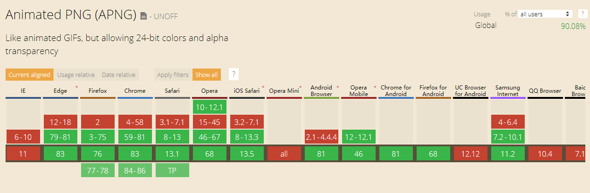
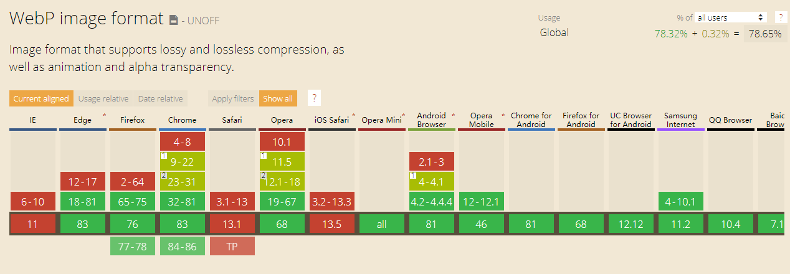

是时候了解下APNG，WEBP了
概述
在日常开发中除了经常看到的png,jpg,bmp,gif外，还存在一些其他图片格式，因为没有正式纳入标准，所以兼容性存在一定问题，但随着web的日益壮大，越来越多的浏览器开始支持这些新的格式，本文我们介绍下APNG与WEBP
APNG
APNG（Animated Portable Network Graphics）顾名思义是基于 PNG 格式扩展的一种动画格式，增加了对动画图像的支持，同时加入了 24 位图像和 8 位 Alpha 透明度的支持，这意味着动画将拥有更好的质量，其诞生的目的是为了替代老旧的 GIF 格式，但它目前并没有获得 PNG 组织官方的认可。
APNG 的出现就是为了替代 GIF，诞生于 1987 年的 GIF 为什么能存活 29 年之久？
主要有四个原因：
- 几乎所有的主流浏览器都支持 GIF
- 早期选择不多，GIF 几乎是唯一选择（GIF - 1987、JPEG - 1992、PNG - 1996、APNG - 2004、WebP - 2010）
- 实现起来简单，制作的工具多
- 采用 LZW 数据压缩算法，使得 GIF 体积小，在早期慢速的互联网易于传播
为什么要取代gif
- 最多支持 8 位 256 色，色阶过渡糟糕，图片具有颗粒感
- 不支持 Alpha 透明通道，边缘有杂边
APNG的优点
- 支持 24 位真彩色图片
- 支持 8 位 Alpha 透明通道
- 向下兼容 PNG（不支持动画会展示第一帧静态png图片）
- 更小的体积：多数情况下比 GIF、WebP 以及有损的 WebP 的体积小
假设假设使用一个 4 帧图片合成 APNG，APNG 会通过算法计算帧之间的差异，只存储帧之前的差异，而不是存储全帧，这就是为什么APNG体积更小的原因。
gif图片：
apng图片（如果展示为静态图说明不支持apng）：
可以看出来apng边缘没有杂边，质量要好很多。
如何制作
APNG Software网站上有大量的制作工具，可根据需求选用。
兼容性

从上图可以看到apng的支持率已达到90%，基本可以放心使用。
WEBP
目前网络中图片仍然是占用流量较大的一部分，对于移动端更是如此。JPEG、PNG、GIF等常用图片格式的优化已几乎达到极致，因此Google于2010年提出了一种新的图片压缩格式 — WebP，给图片的优化提供了新的可能。
又拍云有关于webp的详细介绍（从demo可以看出对比png，webp最多可压缩98%的大小）：
动态WEBP
没错，webp的“野心”只是替换静态图片，对于动图也做了支持。谷歌于2014年提出了动态WebP，拓展WebP使其支持动图能力。动态WebP相比GIF支持更丰富的色彩，并且也占用更小空间。
WebP的优势在于它具有更优的图像数据压缩算法，在拥有肉眼无法识别差异的图像质量前提下，带来更小的图片体积，同时具备了无损和有损的压缩模式、Alpha 透明以及动画的特性，在 JPEG 和 PNG 上的转化效果都非常优秀、稳定和统一。
兼容性

从上图可以看到webp的支持率大约为80%左右，还是存在一些兼容性问题的，对于桌面开发来说，无须关心兼容性，可以放心使用。
对于不支持webp的浏览器（如Safari），打开图片时，浏览器会直接进行下载保存操作，不会展示图片。